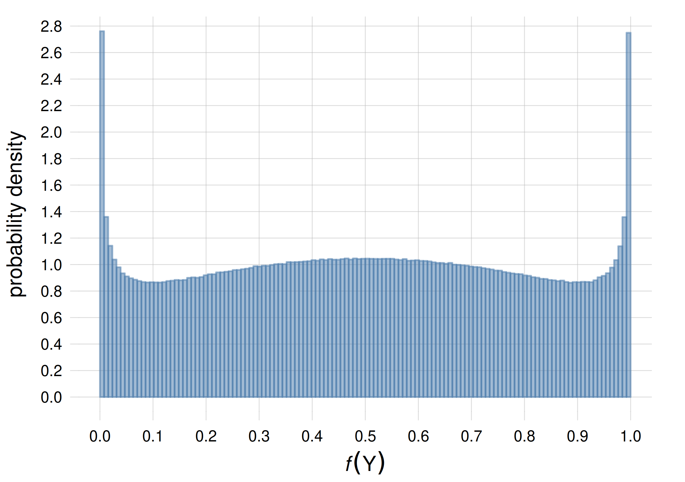

32 The Dirichlet-mixture belief distribution
\(\DeclarePairedDelimiter{\set}{\{}{\}}\)
We have finally collected all we need to build a real, prototype

up from ground principles. This will be done in the present and following chapters of this part. In this chapter we specify and discuss a concrete belief distribution representing an agent with exchangeable beliefs about nominal variates. In the next we put it into code. Then we apply it to some real datasets.
32.1 A belief distribution for frequency distributions over nominal variates
In this course we sadly shall not examine in depth many mathematical expressions for belief distributions \(\mathrm{P}(F\mathclose{}\mathord{\nonscript\mkern 0mu\textrm{\small=}\nonscript\mkern 0mu}\mathopen{}\boldsymbol{f}\nonscript\:\vert\nonscript\:\mathopen{}\mathsfit{I})\) over frequencies. We briefly discuss one, called the Dirichlet-mixture belief distribution. The state of knowledge underlying this distribution will be denoted \(\mathsfit{I}_{\textrm{d}}\).
The Dirichlet-mixture distribution is appropriate for statistical populations with nominal, discrete variates, or joint variates with all nominal components. It is not appropriate to discrete ordinal variates, because it implicitly assumes that there is no natural order to the variate values.
Suppose we have a simple or joint nominal variate \({\color[RGB]{68,119,170}Z}\) which can assume \(M\) different values (these can be joint values, as in the examples of § 29.2). As usual \(\boldsymbol{f}\) denotes a specific frequency distribution for the variate values. For a specific value \({\color[RGB]{68,119,170}z}\), \(f({\color[RGB]{68,119,170}z})\) is the relative frequency with which that value occurs in the full population.
The Dirichlet-mixture distribution assigns to \(\boldsymbol{f}\) a probability density given by the following formula:
\[\mathrm{p}(F\mathclose{}\mathord{\nonscript\mkern 0mu\textrm{\small=}\nonscript\mkern 0mu}\mathopen{}\boldsymbol{f}\nonscript\:\vert\nonscript\:\mathopen{} \mathsfit{I}_{\textrm{d}}) = \frac{1}{k_{\text{ma}}-k_{\text{mi}}+1} \sum_{k=k_{\text{mi}}}^{k_{\text{ma}}} \Biggl[\prod_{{\color[RGB]{68,119,170}z}} f({\color[RGB]{68,119,170}z})^{\frac{2^k}{M} -1} \Biggr] \cdot \frac{ \bigl(2^{k} -1 \bigr)! }{ {\bigl(\frac{2^{k}}{M} - 1\bigr)!}^M } \]
Besides some multiplicative constants, the probability is simply proportional to the product of all frequencies, raised to some powers. The product “\(\prod_{{\color[RGB]{68,119,170}z}}\)” is over all \(M\) possible values of \({\color[RGB]{68,119,170}Z}\). The sum “\(\sum_{k}\)” is over an integer (positive or negative) index \(k\) that runs between the minimum value \(k_{\text{mi}}\) and the maximum value \(k_{\text{ma}}\). In the applications of the next chapters these minimum and maximum are chosen as follows:
\[ k_{\text{mi}}=0 \qquad k_{\text{ma}}=20 \]
so the sum \(\sum_k\) runs over 21 terms.
In most applications it does not matter if we take a lower \(k_{\text{mi}}\) or a higher \(k_{\text{ma}}\).
Meaning of the \(k_{\text{mi}}, k_{\text{ma}}\) parameters
The parameters \(k_{\text{mi}}, k_{\text{ma}}\) encode, approximately speaking, the agent’s prior belief about how many data are needed to change its initial beliefs. More precisely, \(2^{k_{\text{mi}}}\) and \(2^{k_{\text{ma}}}\) represent a lower and an upper bound on the amount of data necessary to overcome initial beliefs. Values \(k_{\text{mi}}=0\), \(k_{\text{ma}}=20\) represent the belief that such amount could be anywhere between 1 unit and approximately 1 million units. The belief is spread out uniformly across the orders of magnitude in between.
If \(2^{k_{\text{mi}}}\) is larger than the amount of training data, the agent will consider these data insufficient, and tend to give uniform probabilities to its inferences, for example a 50%/50% probability to a binary variate.
If the amount of data that should be considered “enough” is known, for example from previous studies on similar populations, the parameters \(k_{\text{mi}},k_{\text{ma}}\) can be set to that order of magnitude (in base 2), minus or plus some magnitude range.
Note that if such an order of magnitude is not known, then it does not make sense to “estimate” it from training data with other methods, because an agent with a Dirichlet-mixture distribution will already do that internally (and in an optimal way), provided an ample range is given with \(k_{\text{mi}}, k_{\text{ma}}\).
Let’s see how this formula looks like in a concrete, simple example: the Mars-prospecting scenario (which has many analogies with coin tosses).
The variate \(R\) can assume two values \(\set{{\color[RGB]{102,204,238}{\small\verb;Y;}},{\color[RGB]{204,187,68}{\small\verb;N;}}}\), so \(M=2\) in this case. The frequency distribution consists in two frequencies:
\[f({\color[RGB]{102,204,238}{\small\verb;Y;}}) \qquad f({\color[RGB]{204,187,68}{\small\verb;N;}})\]
of which only one can be chosen independently, since they must sum up to 1. For instance we could consider \(f({\color[RGB]{102,204,238}{\small\verb;Y;}})=0.5, f({\color[RGB]{204,187,68}{\small\verb;N;}})=0.5\), or \(f({\color[RGB]{102,204,238}{\small\verb;Y;}})=0.84, f({\color[RGB]{204,187,68}{\small\verb;N;}})=0.16\), and so on.
Only for this example we choose
\[k_{\text{mi}}=0 \qquad k_{\text{ma}}=2\]
so that the sum \(\sum_k\) runs over 3 terms.
The agent’s belief distribution for the frequencies is
\[ \begin{aligned} \mathrm{p}(F\mathclose{}\mathord{\nonscript\mkern 0mu\textrm{\small=}\nonscript\mkern 0mu}\mathopen{}\boldsymbol{f}\nonscript\:\vert\nonscript\:\mathopen{} \mathsfit{I}_{\textrm{d}}) &= \frac{1}{2-0+1} \sum_{k=0}^{2} \Biggl[\prod_{{\color[RGB]{68,119,170}z}={\color[RGB]{102,204,238}{\small\verb;Y;}}}^{{\color[RGB]{204,187,68}{\small\verb;N;}}} f({\color[RGB]{68,119,170}z})^{\frac{2^k}{2} -1} \Biggr] \cdot \frac{ \bigl(2^{k} -1 \bigr)! }{ {\bigl(\frac{2^{k}}{2} - 1\bigr)!}^2 } \\[2ex] &= \frac{1}{3} \Biggl[ f({\color[RGB]{102,204,238}{\small\verb;Y;}})^{\frac{2^{0}}{2}-1}\cdot f({\color[RGB]{204,187,68}{\small\verb;N;}})^{\frac{2^{0}}{2}-1} \cdot \frac{ \bigl(2^{0} -1 \bigr)! }{ {\bigl(\frac{2^{0}}{2} - 1\bigr)!}^2 } +{} \\[1ex]&\qquad f({\color[RGB]{102,204,238}{\small\verb;Y;}})^{\frac{2^{1}}{2}-1}\cdot f({\color[RGB]{204,187,68}{\small\verb;N;}})^{\frac{2^{1}}{2}-1} \cdot \frac{ \bigl(2^{1} -1 \bigr)! }{ {\bigl(\frac{2^{1}}{2} - 1\bigr)!}^2 } +{} \\[1ex]&\qquad f({\color[RGB]{102,204,238}{\small\verb;Y;}})^{\frac{2^{2}}{2}-1}\cdot f({\color[RGB]{204,187,68}{\small\verb;N;}})^{\frac{2^{2}}{2}-1} \cdot \frac{ \bigl(2^{2} -1 \bigr)! }{ {\bigl(\frac{2^{2}}{2} - 1\bigr)!}^2 } \Biggr] \\[2ex] &= \frac{1}{3} \Biggl[ \frac{1}{\sqrt{f({\color[RGB]{102,204,238}{\small\verb;Y;}})}}\cdot \frac{1}{\sqrt{f({\color[RGB]{204,187,68}{\small\verb;N;}})}} \cdot \frac{1}{\pi} +{} \\[1ex]&\qquad 1 \cdot 1 \cdot \frac{1}{1} +{} \\[1ex]&\qquad f({\color[RGB]{102,204,238}{\small\verb;Y;}})\cdot f({\color[RGB]{204,187,68}{\small\verb;N;}}) \cdot \frac{6}{1} \Biggr] \end{aligned} \]
We can visualize this belief distribution (with \(k_{\text{mi}}=0, k_{\text{ma}}=2\)) with a generalized scatter plot (§ 15.7) of 100 frequency distributions, each represented by a line histogram (§ 14.2):

Alternatively we can represent the probability density of the frequency \(f({\color[RGB]{102,204,238}{\small\verb;Y;}})\):

You can see some characteristics of this belief:
all possible frequency distributions are taken into account, that is, no frequency is judged impossible and given zero probability
a higher probability is given to frequency distributions that are almost 50%/50%, or that are almost 0%/100% or 100%/0%
The second characteristic expresses the belief that the agent may more often deal with tasks where frequencies are almost symmetric (think of coin toss), or the opposite: tasks where, once you observe a phenomenon, you’re quite sure you’ll keep observing it. This latter case is typical of some physical phenomena; an example is given by Jaynes:
For example, in a chemical laboratory we find a jar containing an unknown and unlabeled compound. We are at first completely ignorant as to whether a small sample of this compound will dissolve in water or not. But having observed that one small sample does dissolve, we infer immediately that all samples of this compound are water soluble, and although this conclusion does not carry quite the force of deductive proof, we feel strongly that the inference was justified.
32.2 Formula for joint probabilities about units with the Dirichlet-mixture distribution
A mathematical advantage of the Dirichlet-mixture belief distribution is that some formulae where it enters can be computed exactly. The most important formula is de Finetti’s representation theorem (§ 30.1), where the sum \(\sum_{\boldsymbol{f}}\) (really an integral \(\int\,\mathrm{d}\boldsymbol{f}\)) can be calculated analytically in the case of the Dirichlet-mixture:
\[ \begin{aligned} \mathrm{P}( \color[RGB]{68,119,170} Z_{L}\mathclose{}\mathord{\nonscript\mkern 0mu\textrm{\small=}\nonscript\mkern 0mu}\mathopen{}z_{L} \mathbin{\mkern-0.5mu,\mkern-0.5mu} \dotsb \mathbin{\mkern-0.5mu,\mkern-0.5mu} Z_{1}\mathclose{}\mathord{\nonscript\mkern 0mu\textrm{\small=}\nonscript\mkern 0mu}\mathopen{}z_1 \color[RGB]{0,0,0} \nonscript\:\vert\nonscript\:\mathopen{} \mathsfit{I}_{\textrm{d}} ) &= \int f(\color[RGB]{68,119,170}Z_{L}\mathclose{}\mathord{\nonscript\mkern 0mu\textrm{\small=}\nonscript\mkern 0mu}\mathopen{}z_{L} \color[RGB]{0,0,0}) \cdot \,\dotsb\, \cdot f(\color[RGB]{68,119,170}Z_{1}\mathclose{}\mathord{\nonscript\mkern 0mu\textrm{\small=}\nonscript\mkern 0mu}\mathopen{}z_1 \color[RGB]{0,0,0}) \cdot \mathrm{p}(F\mathclose{}\mathord{\nonscript\mkern 0mu\textrm{\small=}\nonscript\mkern 0mu}\mathopen{}\boldsymbol{f}\nonscript\:\vert\nonscript\:\mathopen{} \mathsfit{I}_{\textrm{d}}) \,\mathrm{d}\boldsymbol{f} \\[2ex] &= \frac{1}{k_{\text{ma}}-k_{\text{mi}}+1} \sum_{k=k_{\text{mi}}}^{k_{\text{ma}}} \frac{ \prod_{{\color[RGB]{68,119,170}z}} \bigl(\frac{2^{k}}{M} + \#{\color[RGB]{68,119,170}z}- 1\bigr)! }{ \bigl(2^{k} + L -1 \bigr)! } \cdot \frac{ \bigl(2^{k} -1 \bigr)! }{ {\bigl(\frac{2^{k}}{M} - 1\bigr)!}^M } \end{aligned} \]
where \(\#{\color[RGB]{68,119,170}z}\) is the multiplicity with which the specific value \({\color[RGB]{68,119,170}z}\) occurs in the sequence \(\color[RGB]{68,119,170}z_1,\dotsc,z_{L}\).
Let’s see how this formula looks like in an example from the Mars-prospecting scenario.
Take the sequence1
1 Remember that the agent has exchangeable beliefs, so the units’ IDs don’t matter (§ 28.3)!
\[ R_1\mathclose{}\mathord{\nonscript\mkern 0mu\textrm{\small=}\nonscript\mkern 0mu}\mathopen{}{\color[RGB]{102,204,238}{\small\verb;Y;}}\mathbin{\mkern-0.5mu,\mkern-0.5mu}R_2\mathclose{}\mathord{\nonscript\mkern 0mu\textrm{\small=}\nonscript\mkern 0mu}\mathopen{}{\color[RGB]{102,204,238}{\small\verb;Y;}}\mathbin{\mkern-0.5mu,\mkern-0.5mu}R_3\mathclose{}\mathord{\nonscript\mkern 0mu\textrm{\small=}\nonscript\mkern 0mu}\mathopen{}{\color[RGB]{204,187,68}{\small\verb;N;}}\mathbin{\mkern-0.5mu,\mkern-0.5mu}R_4\mathclose{}\mathord{\nonscript\mkern 0mu\textrm{\small=}\nonscript\mkern 0mu}\mathopen{}{\color[RGB]{102,204,238}{\small\verb;Y;}} \]
in this sequence, value \({\color[RGB]{102,204,238}{\small\verb;Y;}}\) appears thrice and value \({\color[RGB]{204,187,68}{\small\verb;N;}}\) once, that is
\[L=4 \qquad \#{\color[RGB]{102,204,238}{\small\verb;Y;}}= 3 \qquad \#{\color[RGB]{204,187,68}{\small\verb;N;}}= 1\]
In this case we have \(M=2\), and we still take \(k_{\text{mi}}=0, k_{\text{ma}}=2\). The formula above then becomes
\[ \begin{aligned} &\mathrm{P}( \underbracket[0.1ex]{R_1\mathclose{}\mathord{\nonscript\mkern 0mu\textrm{\small=}\nonscript\mkern 0mu}\mathopen{}{\color[RGB]{102,204,238}{\small\verb;Y;}}\mathbin{\mkern-0.5mu,\mkern-0.5mu}R_2\mathclose{}\mathord{\nonscript\mkern 0mu\textrm{\small=}\nonscript\mkern 0mu}\mathopen{}{\color[RGB]{102,204,238}{\small\verb;Y;}}\mathbin{\mkern-0.5mu,\mkern-0.5mu}R_3\mathclose{}\mathord{\nonscript\mkern 0mu\textrm{\small=}\nonscript\mkern 0mu}\mathopen{}{\color[RGB]{204,187,68}{\small\verb;N;}}\mathbin{\mkern-0.5mu,\mkern-0.5mu}R_4\mathclose{}\mathord{\nonscript\mkern 0mu\textrm{\small=}\nonscript\mkern 0mu}\mathopen{}{\color[RGB]{102,204,238}{\small\verb;Y;}}}_{ \color[RGB]{187,187,187}L=4\quad \#{\small\verb;Y;}=3\quad \#{\small\verb;N;}=1 } \nonscript\:\vert\nonscript\:\mathopen{} \mathsfit{I}_{\textrm{d}} ) \\ &\qquad{}= \frac{1}{k_{\text{ma}}-k_{\text{mi}}+1} \sum_{k=k_{\text{mi}}}^{k_{\text{ma}}} \frac{ \prod_{{\color[RGB]{68,119,170}z}} \bigl(\frac{2^{k}}{M} + \#{\color[RGB]{68,119,170}z}- 1\bigr)! }{ \bigl(2^{k} + L -1 \bigr)! } \cdot \frac{ \bigl(2^{k} -1 \bigr)! }{ {\bigl(\frac{2^{k}}{M} - 1\bigr)!}^M } \\[2ex] &\qquad{}= \frac{1}{2-0+1} \sum_{k=k_{\text{mi}}}^{k_{\text{ma}}} \frac{ \bigl(\frac{2^{k}}{2} + \#{\color[RGB]{102,204,238}{\small\verb;Y;}}- 1\bigr)! \cdot \bigl(\frac{2^{k}}{2} + \#{\color[RGB]{204,187,68}{\small\verb;N;}}- 1\bigr)! }{ \bigl(2^{k} + 4 -1 \bigr)! } \cdot \frac{ \bigl(2^{k} -1 \bigr)! }{ {\bigl(\frac{2^{k}}{2} - 1\bigr)!}^2 } \\[2ex] &\qquad{}= \frac{1}{3} \sum_{k=-1}^{2} \frac{ \bigl(\frac{2^{k}}{2} + {\color[RGB]{102,204,238}3} - 1\bigr)! \cdot \bigl(\frac{2^{k}}{2} + {\color[RGB]{204,187,68}1} - 1\bigr)! }{ \bigl(2^{k} + 3 \bigr)! } \cdot \frac{ \bigl(2^{k} -1 \bigr)! }{ {\bigl(\frac{2^{k}}{2} - 1\bigr)!}^2 } \\[1ex] &\qquad{}= \boldsymbol{0.048 735 1} \end{aligned} \]
32.3 Examples of inference tasks with the Dirichlet-mixture belief distribution
With the explicit formula
we can now solve all the kinds of task involving multiple units that were discussed in § 27.3. Let’s see a simple example of forecasting all variates for a new unit (no predictors), and another example where we guess a predictand given a predictor. We shall solve them step by step.
32.4 Example 1: Forecast about one variate, given previous observations
In this task there are no predictors and only one predictand variate \(R\): the presence of haematite. The agent observes the value of this variate in several rocks, and tries to forecast its value in a new rock.
The agent has exchangeable beliefs represented by a Dirichlet-mixture distribution. The variate of the population of interest has two possible values, so in the formulae above we have \(M=2\). We still take \(k_{\text{mi}}=0\), \(k_{\text{ma}}=2\).
The agent has collected three rocks. Upon examination, two of them contain haematite, one doesn’t. The agent’s data are therefore
\[\text{\small data:}\quad R_1\mathclose{}\mathord{\nonscript\mkern 0mu\textrm{\small=}\nonscript\mkern 0mu}\mathopen{}{\color[RGB]{102,204,238}{\small\verb;Y;}}\mathbin{\mkern-0.5mu,\mkern-0.5mu}R_2\mathclose{}\mathord{\nonscript\mkern 0mu\textrm{\small=}\nonscript\mkern 0mu}\mathopen{}{\color[RGB]{102,204,238}{\small\verb;Y;}}\mathbin{\mkern-0.5mu,\mkern-0.5mu}R_3\mathclose{}\mathord{\nonscript\mkern 0mu\textrm{\small=}\nonscript\mkern 0mu}\mathopen{}{\color[RGB]{204,187,68}{\small\verb;N;}}\]
(remember that it doesn’t matter how the rocks are labelled, because the agent’s beliefs are exchangeable).
What probability should the agent give to finding haematite in a newly collected rock? That is, what value should it assign to
\[\mathrm{P}(R_4\mathclose{}\mathord{\nonscript\mkern 0mu\textrm{\small=}\nonscript\mkern 0mu}\mathopen{}{\color[RGB]{102,204,238}{\small\verb;Y;}}\nonscript\:\vert\nonscript\:\mathopen{} R_1\mathclose{}\mathord{\nonscript\mkern 0mu\textrm{\small=}\nonscript\mkern 0mu}\mathopen{}{\color[RGB]{102,204,238}{\small\verb;Y;}}\mathbin{\mkern-0.5mu,\mkern-0.5mu}R_2\mathclose{}\mathord{\nonscript\mkern 0mu\textrm{\small=}\nonscript\mkern 0mu}\mathopen{}{\color[RGB]{102,204,238}{\small\verb;Y;}}\mathbin{\mkern-0.5mu,\mkern-0.5mu}R_3\mathclose{}\mathord{\nonscript\mkern 0mu\textrm{\small=}\nonscript\mkern 0mu}\mathopen{}{\color[RGB]{204,187,68}{\small\verb;N;}}\mathbin{\mkern-0.5mu,\mkern-0.5mu}\mathsfit{I}_{\textrm{d}}) \ ?\]
Our main formula is
\[ \mathrm{P}(R_4\mathclose{}\mathord{\nonscript\mkern 0mu\textrm{\small=}\nonscript\mkern 0mu}\mathopen{}{\color[RGB]{102,204,238}{\small\verb;Y;}}\nonscript\:\vert\nonscript\:\mathopen{} R_1\mathclose{}\mathord{\nonscript\mkern 0mu\textrm{\small=}\nonscript\mkern 0mu}\mathopen{}{\color[RGB]{102,204,238}{\small\verb;Y;}}\mathbin{\mkern-0.5mu,\mkern-0.5mu}R_2\mathclose{}\mathord{\nonscript\mkern 0mu\textrm{\small=}\nonscript\mkern 0mu}\mathopen{}{\color[RGB]{102,204,238}{\small\verb;Y;}}\mathbin{\mkern-0.5mu,\mkern-0.5mu}R_3\mathclose{}\mathord{\nonscript\mkern 0mu\textrm{\small=}\nonscript\mkern 0mu}\mathopen{}{\color[RGB]{204,187,68}{\small\verb;N;}}\mathbin{\mkern-0.5mu,\mkern-0.5mu}\mathsfit{I}_{\textrm{d}}) = \frac{ \mathrm{P}(R_4\mathclose{}\mathord{\nonscript\mkern 0mu\textrm{\small=}\nonscript\mkern 0mu}\mathopen{}{\color[RGB]{102,204,238}{\small\verb;Y;}}\mathbin{\mkern-0.5mu,\mkern-0.5mu}R_1\mathclose{}\mathord{\nonscript\mkern 0mu\textrm{\small=}\nonscript\mkern 0mu}\mathopen{}{\color[RGB]{102,204,238}{\small\verb;Y;}}\mathbin{\mkern-0.5mu,\mkern-0.5mu}R_2\mathclose{}\mathord{\nonscript\mkern 0mu\textrm{\small=}\nonscript\mkern 0mu}\mathopen{}{\color[RGB]{102,204,238}{\small\verb;Y;}}\mathbin{\mkern-0.5mu,\mkern-0.5mu}R_3\mathclose{}\mathord{\nonscript\mkern 0mu\textrm{\small=}\nonscript\mkern 0mu}\mathopen{}{\color[RGB]{204,187,68}{\small\verb;N;}}\nonscript\:\vert\nonscript\:\mathopen{} \mathsfit{I}_{\textrm{d}}) }{ \sum_{{\color[RGB]{170,51,119}r}={\color[RGB]{102,204,238}{\small\verb;Y;}}}^{{\color[RGB]{204,187,68}{\small\verb;N;}}} \mathrm{P}(R_4\mathclose{}\mathord{\nonscript\mkern 0mu\textrm{\small=}\nonscript\mkern 0mu}\mathopen{}{\color[RGB]{170,51,119}r} \mathbin{\mkern-0.5mu,\mkern-0.5mu}R_1\mathclose{}\mathord{\nonscript\mkern 0mu\textrm{\small=}\nonscript\mkern 0mu}\mathopen{}{\color[RGB]{102,204,238}{\small\verb;Y;}}\mathbin{\mkern-0.5mu,\mkern-0.5mu}R_2\mathclose{}\mathord{\nonscript\mkern 0mu\textrm{\small=}\nonscript\mkern 0mu}\mathopen{}{\color[RGB]{102,204,238}{\small\verb;Y;}}\mathbin{\mkern-0.5mu,\mkern-0.5mu}R_3\mathclose{}\mathord{\nonscript\mkern 0mu\textrm{\small=}\nonscript\mkern 0mu}\mathopen{}{\color[RGB]{204,187,68}{\small\verb;N;}}\nonscript\:\vert\nonscript\:\mathopen{} \mathsfit{I}_{\textrm{d}}) } \]
The fraction above requires the computation of two joint probabilities:
\[ \begin{aligned} \mathrm{P}(R_4\mathclose{}\mathord{\nonscript\mkern 0mu\textrm{\small=}\nonscript\mkern 0mu}\mathopen{}{\color[RGB]{102,204,238}{\small\verb;Y;}}\, \mathbin{\mkern-0.5mu,\mkern-0.5mu}\, R_1\mathclose{}\mathord{\nonscript\mkern 0mu\textrm{\small=}\nonscript\mkern 0mu}\mathopen{}{\color[RGB]{102,204,238}{\small\verb;Y;}}\mathbin{\mkern-0.5mu,\mkern-0.5mu}R_2\mathclose{}\mathord{\nonscript\mkern 0mu\textrm{\small=}\nonscript\mkern 0mu}\mathopen{}{\color[RGB]{102,204,238}{\small\verb;Y;}}\mathbin{\mkern-0.5mu,\mkern-0.5mu}R_3\mathclose{}\mathord{\nonscript\mkern 0mu\textrm{\small=}\nonscript\mkern 0mu}\mathopen{}{\color[RGB]{204,187,68}{\small\verb;N;}}\nonscript\:\vert\nonscript\:\mathopen{} \mathsfit{I}_{\textrm{d}}) \\[1ex] \mathrm{P}(R_4\mathclose{}\mathord{\nonscript\mkern 0mu\textrm{\small=}\nonscript\mkern 0mu}\mathopen{}{\color[RGB]{204,187,68}{\small\verb;N;}}\, \mathbin{\mkern-0.5mu,\mkern-0.5mu}\, R_1\mathclose{}\mathord{\nonscript\mkern 0mu\textrm{\small=}\nonscript\mkern 0mu}\mathopen{}{\color[RGB]{102,204,238}{\small\verb;Y;}}\mathbin{\mkern-0.5mu,\mkern-0.5mu}R_2\mathclose{}\mathord{\nonscript\mkern 0mu\textrm{\small=}\nonscript\mkern 0mu}\mathopen{}{\color[RGB]{102,204,238}{\small\verb;Y;}}\mathbin{\mkern-0.5mu,\mkern-0.5mu}R_3\mathclose{}\mathord{\nonscript\mkern 0mu\textrm{\small=}\nonscript\mkern 0mu}\mathopen{}{\color[RGB]{204,187,68}{\small\verb;N;}}\nonscript\:\vert\nonscript\:\mathopen{} \mathsfit{I}_{\textrm{d}}) \end{aligned} \]
Note how they are associated with the two possible hypotheses about the new rock:
\[R_4\mathclose{}\mathord{\nonscript\mkern 0mu\textrm{\small=}\nonscript\mkern 0mu}\mathopen{}{\color[RGB]{102,204,238}{\small\verb;Y;}}\qquad R_4\mathclose{}\mathord{\nonscript\mkern 0mu\textrm{\small=}\nonscript\mkern 0mu}\mathopen{}{\color[RGB]{204,187,68}{\small\verb;N;}}\]
of which the first one interests us.
a In the first joint probability, \({\color[RGB]{102,204,238}{\small\verb;Y;}}\) appears thrice and \({\color[RGB]{204,187,68}{\small\verb;N;}}\) appears once, so
\[\#{\color[RGB]{102,204,238}{\small\verb;Y;}}= 3 \qquad \#{\color[RGB]{204,187,68}{\small\verb;N;}}= 1 \qquad {\color[RGB]{119,119,119}L} = {\color[RGB]{119,119,119}4}\]
The de Finetti representation formula gives
\[\begin{aligned} &\mathrm{P}(R_4\mathclose{}\mathord{\nonscript\mkern 0mu\textrm{\small=}\nonscript\mkern 0mu}\mathopen{}{\color[RGB]{102,204,238}{\small\verb;Y;}}\, \mathbin{\mkern-0.5mu,\mkern-0.5mu}\, R_1\mathclose{}\mathord{\nonscript\mkern 0mu\textrm{\small=}\nonscript\mkern 0mu}\mathopen{}{\color[RGB]{102,204,238}{\small\verb;Y;}}\mathbin{\mkern-0.5mu,\mkern-0.5mu}R_2\mathclose{}\mathord{\nonscript\mkern 0mu\textrm{\small=}\nonscript\mkern 0mu}\mathopen{}{\color[RGB]{102,204,238}{\small\verb;Y;}}\mathbin{\mkern-0.5mu,\mkern-0.5mu}R_3\mathclose{}\mathord{\nonscript\mkern 0mu\textrm{\small=}\nonscript\mkern 0mu}\mathopen{}{\color[RGB]{204,187,68}{\small\verb;N;}}\nonscript\:\vert\nonscript\:\mathopen{} \mathsfit{I}_{\textrm{d}}) \\[1ex] &\qquad{}= \frac{1}{2-0+1} \sum_{k=0}^{2} \frac{ \bigl(\frac{2^{k}}{2} + {\color[RGB]{102,204,238}3} - 1\bigr)! \cdot \bigl(\frac{2^{k}}{2} + {\color[RGB]{204,187,68}1} - 1\bigr)! }{ \bigl(2^{k} + {\color[RGB]{119,119,119}4} -1 \bigr)! } \cdot \frac{ \bigl(2^{k} -1 \bigr)! }{ {\bigl(\frac{2^{k}}{2} - 1\bigr)!}^2 } \\[1ex] &\qquad{}= \boldsymbol{0.048 735 1} \end{aligned} \]
b In the second joint probability, \({\color[RGB]{102,204,238}{\small\verb;Y;}}\) appears twice and \({\color[RGB]{204,187,68}{\small\verb;N;}}\) appears twice, so
\[\#{\color[RGB]{102,204,238}{\small\verb;Y;}}= 2 \qquad \#{\color[RGB]{204,187,68}{\small\verb;N;}}= 2 \qquad {\color[RGB]{119,119,119}L} = {\color[RGB]{119,119,119}4}\]
We find
\[\begin{aligned} &\mathrm{P}(R_4\mathclose{}\mathord{\nonscript\mkern 0mu\textrm{\small=}\nonscript\mkern 0mu}\mathopen{}{\color[RGB]{102,204,238}{\small\verb;Y;}}\, \mathbin{\mkern-0.5mu,\mkern-0.5mu}\, R_1\mathclose{}\mathord{\nonscript\mkern 0mu\textrm{\small=}\nonscript\mkern 0mu}\mathopen{}{\color[RGB]{102,204,238}{\small\verb;Y;}}\mathbin{\mkern-0.5mu,\mkern-0.5mu}R_2\mathclose{}\mathord{\nonscript\mkern 0mu\textrm{\small=}\nonscript\mkern 0mu}\mathopen{}{\color[RGB]{102,204,238}{\small\verb;Y;}}\mathbin{\mkern-0.5mu,\mkern-0.5mu}R_3\mathclose{}\mathord{\nonscript\mkern 0mu\textrm{\small=}\nonscript\mkern 0mu}\mathopen{}{\color[RGB]{204,187,68}{\small\verb;N;}}\nonscript\:\vert\nonscript\:\mathopen{} \mathsfit{I}_{\textrm{d}}) \\[1ex] &\qquad{}= \frac{1}{2-0+1} \sum_{k=0}^{2} \frac{ \bigl(\frac{2^{k}}{2} + {\color[RGB]{102,204,238}2} - 1\bigr)! \cdot \bigl(\frac{2^{k}}{2} + {\color[RGB]{204,187,68}2} - 1\bigr)! }{ \bigl(2^{k} + {\color[RGB]{119,119,119}4} -1 \bigr)! } \cdot \frac{ \bigl(2^{k} -1 \bigr)! }{ {\bigl(\frac{2^{k}}{2} - 1\bigr)!}^2 } \\[1ex] &\qquad{}= \boldsymbol{0.033 209 3} \end{aligned} \]
The probability for the hypothesis of interest is finally given by the fraction
\[ \begin{aligned} &\mathrm{P}(R_4\mathclose{}\mathord{\nonscript\mkern 0mu\textrm{\small=}\nonscript\mkern 0mu}\mathopen{}{\color[RGB]{102,204,238}{\small\verb;Y;}}\nonscript\:\vert\nonscript\:\mathopen{} R_1\mathclose{}\mathord{\nonscript\mkern 0mu\textrm{\small=}\nonscript\mkern 0mu}\mathopen{}{\color[RGB]{102,204,238}{\small\verb;Y;}}\mathbin{\mkern-0.5mu,\mkern-0.5mu}R_2\mathclose{}\mathord{\nonscript\mkern 0mu\textrm{\small=}\nonscript\mkern 0mu}\mathopen{}{\color[RGB]{102,204,238}{\small\verb;Y;}}\mathbin{\mkern-0.5mu,\mkern-0.5mu}R_3\mathclose{}\mathord{\nonscript\mkern 0mu\textrm{\small=}\nonscript\mkern 0mu}\mathopen{}{\color[RGB]{204,187,68}{\small\verb;N;}}\mathbin{\mkern-0.5mu,\mkern-0.5mu}\mathsfit{I}_{\textrm{d}}) \\[1ex] &\qquad{}= \frac{ \mathrm{P}(R_4\mathclose{}\mathord{\nonscript\mkern 0mu\textrm{\small=}\nonscript\mkern 0mu}\mathopen{}{\color[RGB]{102,204,238}{\small\verb;Y;}}\mathbin{\mkern-0.5mu,\mkern-0.5mu}R_1\mathclose{}\mathord{\nonscript\mkern 0mu\textrm{\small=}\nonscript\mkern 0mu}\mathopen{}{\color[RGB]{102,204,238}{\small\verb;Y;}}\mathbin{\mkern-0.5mu,\mkern-0.5mu}R_2\mathclose{}\mathord{\nonscript\mkern 0mu\textrm{\small=}\nonscript\mkern 0mu}\mathopen{}{\color[RGB]{102,204,238}{\small\verb;Y;}}\mathbin{\mkern-0.5mu,\mkern-0.5mu}R_3\mathclose{}\mathord{\nonscript\mkern 0mu\textrm{\small=}\nonscript\mkern 0mu}\mathopen{}{\color[RGB]{204,187,68}{\small\verb;N;}}\nonscript\:\vert\nonscript\:\mathopen{} \mathsfit{I}_{\textrm{d}}) }{ \sum_{{\color[RGB]{170,51,119}r}={\color[RGB]{102,204,238}{\small\verb;Y;}}}^{{\color[RGB]{204,187,68}{\small\verb;N;}}} \mathrm{P}(R_4\mathclose{}\mathord{\nonscript\mkern 0mu\textrm{\small=}\nonscript\mkern 0mu}\mathopen{}{\color[RGB]{170,51,119}r} \mathbin{\mkern-0.5mu,\mkern-0.5mu}R_1\mathclose{}\mathord{\nonscript\mkern 0mu\textrm{\small=}\nonscript\mkern 0mu}\mathopen{}{\color[RGB]{102,204,238}{\small\verb;Y;}}\mathbin{\mkern-0.5mu,\mkern-0.5mu}R_2\mathclose{}\mathord{\nonscript\mkern 0mu\textrm{\small=}\nonscript\mkern 0mu}\mathopen{}{\color[RGB]{102,204,238}{\small\verb;Y;}}\mathbin{\mkern-0.5mu,\mkern-0.5mu}R_3\mathclose{}\mathord{\nonscript\mkern 0mu\textrm{\small=}\nonscript\mkern 0mu}\mathopen{}{\color[RGB]{204,187,68}{\small\verb;N;}}\nonscript\:\vert\nonscript\:\mathopen{} \mathsfit{I}_{\textrm{d}}) } \\[1ex] &\qquad{}= \frac{ \mathrm{P}(R_4\mathclose{}\mathord{\nonscript\mkern 0mu\textrm{\small=}\nonscript\mkern 0mu}\mathopen{}{\color[RGB]{102,204,238}{\small\verb;Y;}}\, \mathbin{\mkern-0.5mu,\mkern-0.5mu}\, R_1\mathclose{}\mathord{\nonscript\mkern 0mu\textrm{\small=}\nonscript\mkern 0mu}\mathopen{}{\color[RGB]{102,204,238}{\small\verb;Y;}}\mathbin{\mkern-0.5mu,\mkern-0.5mu}R_2\mathclose{}\mathord{\nonscript\mkern 0mu\textrm{\small=}\nonscript\mkern 0mu}\mathopen{}{\color[RGB]{102,204,238}{\small\verb;Y;}}\mathbin{\mkern-0.5mu,\mkern-0.5mu}R_3\mathclose{}\mathord{\nonscript\mkern 0mu\textrm{\small=}\nonscript\mkern 0mu}\mathopen{}{\color[RGB]{204,187,68}{\small\verb;N;}}\nonscript\:\vert\nonscript\:\mathopen{} \mathsfit{I}_{\textrm{d}}) }{ \mathrm{P}(R_4\mathclose{}\mathord{\nonscript\mkern 0mu\textrm{\small=}\nonscript\mkern 0mu}\mathopen{}{\color[RGB]{102,204,238}{\small\verb;Y;}}\, \mathbin{\mkern-0.5mu,\mkern-0.5mu}\, R_1\mathclose{}\mathord{\nonscript\mkern 0mu\textrm{\small=}\nonscript\mkern 0mu}\mathopen{}{\color[RGB]{102,204,238}{\small\verb;Y;}}\mathbin{\mkern-0.5mu,\mkern-0.5mu}R_2\mathclose{}\mathord{\nonscript\mkern 0mu\textrm{\small=}\nonscript\mkern 0mu}\mathopen{}{\color[RGB]{102,204,238}{\small\verb;Y;}}\mathbin{\mkern-0.5mu,\mkern-0.5mu}R_3\mathclose{}\mathord{\nonscript\mkern 0mu\textrm{\small=}\nonscript\mkern 0mu}\mathopen{}{\color[RGB]{204,187,68}{\small\verb;N;}}\nonscript\:\vert\nonscript\:\mathopen{} \mathsfit{I}_{\textrm{d}}) + \mathrm{P}(R_4\mathclose{}\mathord{\nonscript\mkern 0mu\textrm{\small=}\nonscript\mkern 0mu}\mathopen{}{\color[RGB]{204,187,68}{\small\verb;N;}}\, \mathbin{\mkern-0.5mu,\mkern-0.5mu}\, R_1\mathclose{}\mathord{\nonscript\mkern 0mu\textrm{\small=}\nonscript\mkern 0mu}\mathopen{}{\color[RGB]{102,204,238}{\small\verb;Y;}}\mathbin{\mkern-0.5mu,\mkern-0.5mu}R_2\mathclose{}\mathord{\nonscript\mkern 0mu\textrm{\small=}\nonscript\mkern 0mu}\mathopen{}{\color[RGB]{102,204,238}{\small\verb;Y;}}\mathbin{\mkern-0.5mu,\mkern-0.5mu}R_3\mathclose{}\mathord{\nonscript\mkern 0mu\textrm{\small=}\nonscript\mkern 0mu}\mathopen{}{\color[RGB]{204,187,68}{\small\verb;N;}}\nonscript\:\vert\nonscript\:\mathopen{} \mathsfit{I}_{\textrm{d}}) } \\[1ex] &\qquad{}= \frac{0.048 735 1}{0.048 735 1 + 0.033 209 3} \\[1ex] &\qquad{}= \boldsymbol{59.47\%} \end{aligned} \]
32.5 Example 2: Forecast about one predictand, given predictor and previous observations
Let’s go back to the hospital scenario of § 17.5. The units are patients coming into a hospital. The population is characterized by two nominal variates:
- \(T\): the patient’s means of transportation at arrival, with domain \(\set{{\small\verb;ambulance;}, {\small\verb;helicopter;}, {\small\verb;other;}}\)
- \(U\): the patient’s need of urgent care, with domain \(\set{{\small\verb;urgent;}, {\small\verb;non-urgent;}}\)
The combined variate \((U \mathbin{\mkern-0.5mu,\mkern-0.5mu}T)\) has \(M = 2\cdot 3 = 6\) possible values. We still use parameters \(k_{\text{mi}}=0\) and \(k_{\text{ma}}=2\) to use the de Finetti formula as-is without causing overflow errors.
The agent’s task is to forecast whether the next incoming patient will require urgent care, given information about the patient’s transportation. So \(U\) is the predictand variate, \(T\) the predictor variate.
At the moment the agent has a complete record of two previous patients:
- \(U_1\mathclose{}\mathord{\nonscript\mkern 0mu\textrm{\small=}\nonscript\mkern 0mu}\mathopen{}{\small\verb;ambulance;}\mathbin{\mkern-0.5mu,\mkern-0.5mu}T_1\mathclose{}\mathord{\nonscript\mkern 0mu\textrm{\small=}\nonscript\mkern 0mu}\mathopen{}{\small\verb;ambulance;}\)
- \(U_2\mathclose{}\mathord{\nonscript\mkern 0mu\textrm{\small=}\nonscript\mkern 0mu}\mathopen{}{\small\verb;non-urgent;}\mathbin{\mkern-0.5mu,\mkern-0.5mu}T_2\mathclose{}\mathord{\nonscript\mkern 0mu\textrm{\small=}\nonscript\mkern 0mu}\mathopen{}{\small\verb;other;}\)
A third patient is incoming by ambulance:
- \(T_3\mathclose{}\mathord{\nonscript\mkern 0mu\textrm{\small=}\nonscript\mkern 0mu}\mathopen{}{\small\verb;ambulance;}\)
What is the probability that this patient requires urgent care?
Initial belief
First let’s get a glimpse of the agent’s forecast if it were given no information about previous patients. We therefore want to calculate the probability
\[\mathrm{P}(U_3\mathclose{}\mathord{\nonscript\mkern 0mu\textrm{\small=}\nonscript\mkern 0mu}\mathopen{}{\small\verb;urgent;}\nonscript\:\vert\nonscript\:\mathopen{} T_3\mathclose{}\mathord{\nonscript\mkern 0mu\textrm{\small=}\nonscript\mkern 0mu}\mathopen{}{\small\verb;ambulance;}\mathbin{\mkern-0.5mu,\mkern-0.5mu}\mathsfit{I}_{\textrm{d}})\]
We need to calculate the two joint probabilities
\[ \mathrm{P}(U_3\mathclose{}\mathord{\nonscript\mkern 0mu\textrm{\small=}\nonscript\mkern 0mu}\mathopen{}{\small\verb;urgent;}\mathbin{\mkern-0.5mu,\mkern-0.5mu}T_3\mathclose{}\mathord{\nonscript\mkern 0mu\textrm{\small=}\nonscript\mkern 0mu}\mathopen{}{\small\verb;ambulance;}\nonscript\:\vert\nonscript\:\mathopen{} \mathsfit{I}_{\textrm{d}}) \qquad \mathrm{P}(U_3\mathclose{}\mathord{\nonscript\mkern 0mu\textrm{\small=}\nonscript\mkern 0mu}\mathopen{}{\small\verb;non-urgent;}\mathbin{\mkern-0.5mu,\mkern-0.5mu}T_3\mathclose{}\mathord{\nonscript\mkern 0mu\textrm{\small=}\nonscript\mkern 0mu}\mathopen{}{\small\verb;ambulance;}\nonscript\:\vert\nonscript\:\mathopen{} \mathsfit{I}_{\textrm{d}}) \]
corresponding to the two hypotheses of interest, \(U_3\mathclose{}\mathord{\nonscript\mkern 0mu\textrm{\small=}\nonscript\mkern 0mu}\mathopen{}{\small\verb;urgent;}\) and \(U_3\mathclose{}\mathord{\nonscript\mkern 0mu\textrm{\small=}\nonscript\mkern 0mu}\mathopen{}{\small\verb;non-urgent;}\).
a In the first joint probability above the value pair \((U\mathclose{}\mathord{\nonscript\mkern 0mu\textrm{\small=}\nonscript\mkern 0mu}\mathopen{}{\small\verb;urgent;}\mathbin{\mkern-0.5mu,\mkern-0.5mu}T\mathclose{}\mathord{\nonscript\mkern 0mu\textrm{\small=}\nonscript\mkern 0mu}\mathopen{}{\small\verb;ambulance;})\) appears once, and the remaining five pairs appear zero times:
\[\#({\small\verb;urgent;}, {\small\verb;ambulance;}) = {\color[RGB]{102,204,238}1} \qquad\text{\small five others }\#(\dotsc,\dotsc) = {\color[RGB]{204,187,68}0} \qquad {\color[RGB]{119,119,119}L} = {\color[RGB]{119,119,119}1}\]
The de Finetti formula gives
\[ \begin{aligned} &\mathrm{P}(U_3\mathclose{}\mathord{\nonscript\mkern 0mu\textrm{\small=}\nonscript\mkern 0mu}\mathopen{}{\small\verb;urgent;}\mathbin{\mkern-0.5mu,\mkern-0.5mu}T_3\mathclose{}\mathord{\nonscript\mkern 0mu\textrm{\small=}\nonscript\mkern 0mu}\mathopen{}{\small\verb;ambulance;}\nonscript\:\vert\nonscript\:\mathopen{} \mathsfit{I}_{\textrm{d}}) \\[2ex] &\qquad{}= \frac{1}{2-0+1} \sum_{k=0}^{2} \frac{ \bigl(\frac{2^{k}}{6} + {\color[RGB]{102,204,238}1} - 1\bigr)! \cdot \underbracket[0.1ex]{\bigl(\frac{2^{k}}{6} + {\color[RGB]{204,187,68}0} - 1\bigr)! \cdot \,\dotsb\, \cdot \bigl(\frac{2^{k}}{6} + {\color[RGB]{204,187,68}0} - 1\bigr)!}_{\text{\color[RGB]{187,187,187}five factors}} }{ \bigl( 2^{k} + {\color[RGB]{119,119,119}1} -1 \bigr)! } \cdot \frac{ \bigl( 2^{k} -1 \bigr)! }{ {\bigl(\frac{2^{k}}{6} - 1\bigr)!}^6 } \\[1ex] &\qquad{}= \boldsymbol{1/6} \end{aligned} \]
b In the second joint probability above the value pair \((U\mathclose{}\mathord{\nonscript\mkern 0mu\textrm{\small=}\nonscript\mkern 0mu}\mathopen{}{\small\verb;non-urgent;}\mathbin{\mkern-0.5mu,\mkern-0.5mu}T\mathclose{}\mathord{\nonscript\mkern 0mu\textrm{\small=}\nonscript\mkern 0mu}\mathopen{}{\small\verb;ambulance;})\) appears once, and the remaining five pairs appear zero times:
\[\#({\small\verb;non-urgent;}, {\small\verb;ambulance;}) = {\color[RGB]{102,204,238}1} \qquad\text{\small five others }\#(\dotsc,\dotsc) = {\color[RGB]{204,187,68}0} \qquad {\color[RGB]{119,119,119}L} = {\color[RGB]{119,119,119}1}\]
The de Finetti formula gives an identical result as before:
\[ \begin{aligned} &\mathrm{P}(U_3\mathclose{}\mathord{\nonscript\mkern 0mu\textrm{\small=}\nonscript\mkern 0mu}\mathopen{}{\small\verb;non-urgent;}\mathbin{\mkern-0.5mu,\mkern-0.5mu}T_3\mathclose{}\mathord{\nonscript\mkern 0mu\textrm{\small=}\nonscript\mkern 0mu}\mathopen{}{\small\verb;ambulance;}\nonscript\:\vert\nonscript\:\mathopen{} \mathsfit{I}_{\textrm{d}}) \\[2ex] &\qquad{}= \frac{1}{2-0+1} \sum_{k=0}^{2} \frac{ \bigl(\frac{2^{k}}{6} + {\color[RGB]{102,204,238}1} - 1\bigr)! \cdot \underbracket[0.1ex]{\bigl(\frac{2^{k}}{6} + {\color[RGB]{204,187,68}0} - 1\bigr)! \cdot \,\dotsb\, \cdot \bigl(\frac{2^{k}}{6} + {\color[RGB]{204,187,68}0} - 1\bigr)!}_{\text{\color[RGB]{187,187,187}five factors}} }{ \bigl( 2^{k} + {\color[RGB]{119,119,119}1} -1 \bigr)! } \cdot \frac{ \bigl( 2^{k} -1 \bigr)! }{ {\bigl(\frac{2^{k}}{6} - 1\bigr)!}^6 } \\[1ex] &\qquad{}= \boldsymbol{1/6} \end{aligned} \]
The probability that this incoming patient is urgent is then
\[ \begin{aligned} & \mathrm{P}(U_3\mathclose{}\mathord{\nonscript\mkern 0mu\textrm{\small=}\nonscript\mkern 0mu}\mathopen{}{\small\verb;urgent;}\nonscript\:\vert\nonscript\:\mathopen{} T_3\mathclose{}\mathord{\nonscript\mkern 0mu\textrm{\small=}\nonscript\mkern 0mu}\mathopen{}{\small\verb;ambulance;}\mathbin{\mkern-0.5mu,\mkern-0.5mu}\mathsfit{I}_{\textrm{d}}) \\[1ex] &\qquad{}= \frac{ \mathrm{P}(U_3\mathclose{}\mathord{\nonscript\mkern 0mu\textrm{\small=}\nonscript\mkern 0mu}\mathopen{}{\small\verb;urgent;}\mathbin{\mkern-0.5mu,\mkern-0.5mu}T_3\mathclose{}\mathord{\nonscript\mkern 0mu\textrm{\small=}\nonscript\mkern 0mu}\mathopen{}{\small\verb;ambulance;}\nonscript\:\vert\nonscript\:\mathopen{} \mathsfit{I}_{\textrm{d}}) }{ \sum_{\color[RGB]{170,51,119}u} \mathrm{P}(U_3\mathclose{}\mathord{\nonscript\mkern 0mu\textrm{\small=}\nonscript\mkern 0mu}\mathopen{}{\color[RGB]{170,51,119}u} \mathbin{\mkern-0.5mu,\mkern-0.5mu}T_3\mathclose{}\mathord{\nonscript\mkern 0mu\textrm{\small=}\nonscript\mkern 0mu}\mathopen{}{\small\verb;ambulance;}\nonscript\:\vert\nonscript\:\mathopen{} \mathsfit{I}_{\textrm{d}}) } \\[1ex] &\qquad{}= \frac{ \mathrm{P}(U_3\mathclose{}\mathord{\nonscript\mkern 0mu\textrm{\small=}\nonscript\mkern 0mu}\mathopen{}{\small\verb;urgent;}\mathbin{\mkern-0.5mu,\mkern-0.5mu}T_3\mathclose{}\mathord{\nonscript\mkern 0mu\textrm{\small=}\nonscript\mkern 0mu}\mathopen{}{\small\verb;ambulance;}\nonscript\:\vert\nonscript\:\mathopen{} \mathsfit{I}_{\textrm{d}}) }{ \mathrm{P}(U_3\mathclose{}\mathord{\nonscript\mkern 0mu\textrm{\small=}\nonscript\mkern 0mu}\mathopen{}{\small\verb;urgent;}\mathbin{\mkern-0.5mu,\mkern-0.5mu}T_3\mathclose{}\mathord{\nonscript\mkern 0mu\textrm{\small=}\nonscript\mkern 0mu}\mathopen{}{\small\verb;ambulance;}\nonscript\:\vert\nonscript\:\mathopen{} \mathsfit{I}_{\textrm{d}}) + \mathrm{P}(U_3\mathclose{}\mathord{\nonscript\mkern 0mu\textrm{\small=}\nonscript\mkern 0mu}\mathopen{}{\small\verb;non-urgent;}\mathbin{\mkern-0.5mu,\mkern-0.5mu}T_3\mathclose{}\mathord{\nonscript\mkern 0mu\textrm{\small=}\nonscript\mkern 0mu}\mathopen{}{\small\verb;ambulance;}\nonscript\:\vert\nonscript\:\mathopen{} \mathsfit{I}_{\textrm{d}}) } \\[1ex] &\qquad{}= \frac{1/6 }{1/6 + 1/6} \\[1ex] &\qquad{}= \boldsymbol{50\%} \end{aligned} \]
The agent’s background information says that, a priori, urgent and non-urgent patients are equally plausible. This is a characteristic of the particular Dirichlet-mixture belief distribution we are using. It would actually be possible to modify it so as to give a-priori different probabilities for the \({\small\verb;urgent;}\) and \({\small\verb;non-urgent;}\) values; but we shall not pursue this possibility here.
Forecast after learning
Now let’s take into account the information about the previous two patients. We therefore want to calculate the probability
\[\mathrm{P}(U_3\mathclose{}\mathord{\nonscript\mkern 0mu\textrm{\small=}\nonscript\mkern 0mu}\mathopen{}{\small\verb;urgent;}\nonscript\:\vert\nonscript\:\mathopen{} T_3\mathclose{}\mathord{\nonscript\mkern 0mu\textrm{\small=}\nonscript\mkern 0mu}\mathopen{}{\small\verb;ambulance;}\mathbin{\mkern-0.5mu,\mkern-0.5mu} U_2\mathclose{}\mathord{\nonscript\mkern 0mu\textrm{\small=}\nonscript\mkern 0mu}\mathopen{}{\small\verb;non-urgent;}\mathbin{\mkern-0.5mu,\mkern-0.5mu}T_2\mathclose{}\mathord{\nonscript\mkern 0mu\textrm{\small=}\nonscript\mkern 0mu}\mathopen{}{\small\verb;other;}\mathbin{\mkern-0.5mu,\mkern-0.5mu} U_1\mathclose{}\mathord{\nonscript\mkern 0mu\textrm{\small=}\nonscript\mkern 0mu}\mathopen{}{\small\verb;urgent;}\mathbin{\mkern-0.5mu,\mkern-0.5mu}T_1\mathclose{}\mathord{\nonscript\mkern 0mu\textrm{\small=}\nonscript\mkern 0mu}\mathopen{}{\small\verb;ambulance;}\mathbin{\mkern-0.5mu,\mkern-0.5mu} \mathsfit{I}_{\textrm{d}}) \]
The hypotheses are again \(U_3\mathclose{}\mathord{\nonscript\mkern 0mu\textrm{\small=}\nonscript\mkern 0mu}\mathopen{}{\small\verb;urgent;}\) and \(U_3\mathclose{}\mathord{\nonscript\mkern 0mu\textrm{\small=}\nonscript\mkern 0mu}\mathopen{}{\small\verb;non-urgent;}\), and we need the joint probabilities
\[ \begin{aligned} &\mathrm{P}(U_3\mathclose{}\mathord{\nonscript\mkern 0mu\textrm{\small=}\nonscript\mkern 0mu}\mathopen{}{\small\verb;urgent;}\mathbin{\mkern-0.5mu,\mkern-0.5mu}T_3\mathclose{}\mathord{\nonscript\mkern 0mu\textrm{\small=}\nonscript\mkern 0mu}\mathopen{}{\small\verb;ambulance;}\mathbin{\mkern-0.5mu,\mkern-0.5mu} U_2\mathclose{}\mathord{\nonscript\mkern 0mu\textrm{\small=}\nonscript\mkern 0mu}\mathopen{}{\small\verb;non-urgent;}\mathbin{\mkern-0.5mu,\mkern-0.5mu}T_2\mathclose{}\mathord{\nonscript\mkern 0mu\textrm{\small=}\nonscript\mkern 0mu}\mathopen{}{\small\verb;other;}\mathbin{\mkern-0.5mu,\mkern-0.5mu} U_1\mathclose{}\mathord{\nonscript\mkern 0mu\textrm{\small=}\nonscript\mkern 0mu}\mathopen{}{\small\verb;urgent;}\mathbin{\mkern-0.5mu,\mkern-0.5mu}T_1\mathclose{}\mathord{\nonscript\mkern 0mu\textrm{\small=}\nonscript\mkern 0mu}\mathopen{}{\small\verb;ambulance;}\nonscript\:\vert\nonscript\:\mathopen{} \mathsfit{I}_{\textrm{d}}) \\[1ex] &\mathrm{P}(U_3\mathclose{}\mathord{\nonscript\mkern 0mu\textrm{\small=}\nonscript\mkern 0mu}\mathopen{}{\small\verb;non-urgent;}\mathbin{\mkern-0.5mu,\mkern-0.5mu}T_3\mathclose{}\mathord{\nonscript\mkern 0mu\textrm{\small=}\nonscript\mkern 0mu}\mathopen{}{\small\verb;ambulance;}\mathbin{\mkern-0.5mu,\mkern-0.5mu} U_2\mathclose{}\mathord{\nonscript\mkern 0mu\textrm{\small=}\nonscript\mkern 0mu}\mathopen{}{\small\verb;non-urgent;}\mathbin{\mkern-0.5mu,\mkern-0.5mu}T_2\mathclose{}\mathord{\nonscript\mkern 0mu\textrm{\small=}\nonscript\mkern 0mu}\mathopen{}{\small\verb;other;}\mathbin{\mkern-0.5mu,\mkern-0.5mu} U_1\mathclose{}\mathord{\nonscript\mkern 0mu\textrm{\small=}\nonscript\mkern 0mu}\mathopen{}{\small\verb;urgent;}\mathbin{\mkern-0.5mu,\mkern-0.5mu}T_1\mathclose{}\mathord{\nonscript\mkern 0mu\textrm{\small=}\nonscript\mkern 0mu}\mathopen{}{\small\verb;ambulance;}\nonscript\:\vert\nonscript\:\mathopen{} \mathsfit{I}_{\textrm{d}}) \end{aligned} \]
a The first joint probability has the following counts:
\[ \#({\small\verb;urgent;}, {\small\verb;ambulance;}) = {\color[RGB]{68,119,170}2} \quad \#({\small\verb;non-urgent;}, {\small\verb;other;}) = {\color[RGB]{102,204,238}1} \quad \text{\small four others }\#(\dotsc,\dotsc) = {\color[RGB]{204,187,68}0} \quad {\color[RGB]{119,119,119}L} = {\color[RGB]{119,119,119}3}\]
and therefore
\[ \begin{aligned} &\mathrm{P}(U_3\mathclose{}\mathord{\nonscript\mkern 0mu\textrm{\small=}\nonscript\mkern 0mu}\mathopen{}{\small\verb;urgent;}\mathbin{\mkern-0.5mu,\mkern-0.5mu}T_3\mathclose{}\mathord{\nonscript\mkern 0mu\textrm{\small=}\nonscript\mkern 0mu}\mathopen{}{\small\verb;ambulance;}\mathbin{\mkern-0.5mu,\mkern-0.5mu} U_2\mathclose{}\mathord{\nonscript\mkern 0mu\textrm{\small=}\nonscript\mkern 0mu}\mathopen{}{\small\verb;non-urgent;}\mathbin{\mkern-0.5mu,\mkern-0.5mu}T_2\mathclose{}\mathord{\nonscript\mkern 0mu\textrm{\small=}\nonscript\mkern 0mu}\mathopen{}{\small\verb;other;}\mathbin{\mkern-0.5mu,\mkern-0.5mu} U_1\mathclose{}\mathord{\nonscript\mkern 0mu\textrm{\small=}\nonscript\mkern 0mu}\mathopen{}{\small\verb;urgent;}\mathbin{\mkern-0.5mu,\mkern-0.5mu}T_1\mathclose{}\mathord{\nonscript\mkern 0mu\textrm{\small=}\nonscript\mkern 0mu}\mathopen{}{\small\verb;ambulance;}\nonscript\:\vert\nonscript\:\mathopen{} \mathsfit{I}_{\textrm{d}}) \\[2ex] &\qquad{}= \frac{1}{3} \sum_{k=0}^{2} \frac{ \bigl(\frac{2^{k}}{6} + {\color[RGB]{68,119,170}2} - 1\bigr)! \cdot \bigl(\frac{2^{k}}{6} + {\color[RGB]{102,204,238}1} - 1\bigr)! \cdot \underbracket[0.1ex]{\bigl(\frac{2^{k}}{6} + {\color[RGB]{204,187,68}0} - 1\bigr)! \cdot \,\dotsb\, \cdot \bigl(\frac{2^{k}}{6} + {\color[RGB]{204,187,68}0} - 1\bigr)!}_{\text{\color[RGB]{187,187,187}four factors}} }{ \bigl( 2^{k} + {\color[RGB]{119,119,119}3} -1 \bigr)! } \cdot \frac{ \bigl( 2^{k} -1 \bigr)! }{ {\bigl(\frac{2^{k}}{6} - 1\bigr)!}^6 } \\[1ex] &\qquad{}= \boldsymbol{0.005 915 64} \end{aligned} \]
b Counts for the second joint probability:
\[ \begin{gathered} \#({\small\verb;urgent;}, {\small\verb;ambulance;}) = {\color[RGB]{102,204,238}1} \qquad \#({\small\verb;non-urgent;}, {\small\verb;ambulance;}) = {\color[RGB]{102,204,238}1} \qquad \#({\small\verb;non-urgent;}, {\small\verb;other;}) = {\color[RGB]{102,204,238}1} \\[1ex] \text{\small three others }\#(\dotsc,\dotsc) = {\color[RGB]{204,187,68}0} \qquad {\color[RGB]{119,119,119}L} = {\color[RGB]{119,119,119}3} \end{gathered} \]
and therefore
\[ \begin{aligned} &\mathrm{P}(U_3\mathclose{}\mathord{\nonscript\mkern 0mu\textrm{\small=}\nonscript\mkern 0mu}\mathopen{}{\small\verb;non-urgent;}\mathbin{\mkern-0.5mu,\mkern-0.5mu}T_3\mathclose{}\mathord{\nonscript\mkern 0mu\textrm{\small=}\nonscript\mkern 0mu}\mathopen{}{\small\verb;ambulance;}\mathbin{\mkern-0.5mu,\mkern-0.5mu} U_2\mathclose{}\mathord{\nonscript\mkern 0mu\textrm{\small=}\nonscript\mkern 0mu}\mathopen{}{\small\verb;non-urgent;}\mathbin{\mkern-0.5mu,\mkern-0.5mu}T_2\mathclose{}\mathord{\nonscript\mkern 0mu\textrm{\small=}\nonscript\mkern 0mu}\mathopen{}{\small\verb;other;}\mathbin{\mkern-0.5mu,\mkern-0.5mu} U_1\mathclose{}\mathord{\nonscript\mkern 0mu\textrm{\small=}\nonscript\mkern 0mu}\mathopen{}{\small\verb;urgent;}\mathbin{\mkern-0.5mu,\mkern-0.5mu}T_1\mathclose{}\mathord{\nonscript\mkern 0mu\textrm{\small=}\nonscript\mkern 0mu}\mathopen{}{\small\verb;ambulance;}\nonscript\:\vert\nonscript\:\mathopen{} \mathsfit{I}_{\textrm{d}}) \\[2ex] &\qquad{}= \frac{1}{3} \sum_{k=0}^{2} \frac{ \underbracket[0.1ex]{ \bigl(\frac{2^{k}}{6} + {\color[RGB]{102,204,238}1} - 1\bigr)! \cdot\,\dotsb\, \cdot \bigl(\frac{2^{k}}{6} + {\color[RGB]{102,204,238}1} - 1\bigr)! }_{\text{\color[RGB]{187,187,187}three factors}} \cdot \underbracket[0.1ex]{\bigl(\frac{2^{k}}{6} + {\color[RGB]{204,187,68}0} - 1\bigr)! \cdot \,\dotsb\, \cdot \bigl(\frac{2^{k}}{6} + {\color[RGB]{204,187,68}0} - 1\bigr)!}_{\text{\color[RGB]{187,187,187}three factors}} }{ \bigl( 2^{k} + {\color[RGB]{119,119,119}3} -1 \bigr)! } \cdot \frac{ \bigl( 2^{k} -1 \bigr)! }{ {\bigl(\frac{2^{k}}{6} - 1\bigr)!}^6 } \\[1ex] &\qquad{}= \boldsymbol{0.001 594 65} \end{aligned} \]
Finally, the probability that the third incoming patient is urgent is
\[ \begin{aligned} & \mathrm{P}(U_3\mathclose{}\mathord{\nonscript\mkern 0mu\textrm{\small=}\nonscript\mkern 0mu}\mathopen{}{\small\verb;urgent;}\nonscript\:\vert\nonscript\:\mathopen{} T_3\mathclose{}\mathord{\nonscript\mkern 0mu\textrm{\small=}\nonscript\mkern 0mu}\mathopen{}{\small\verb;ambulance;}\mathbin{\mkern-0.5mu,\mkern-0.5mu} U_2\mathclose{}\mathord{\nonscript\mkern 0mu\textrm{\small=}\nonscript\mkern 0mu}\mathopen{}{\small\verb;non-urgent;}\mathbin{\mkern-0.5mu,\mkern-0.5mu}T_2\mathclose{}\mathord{\nonscript\mkern 0mu\textrm{\small=}\nonscript\mkern 0mu}\mathopen{}{\small\verb;other;}\mathbin{\mkern-0.5mu,\mkern-0.5mu} U_1\mathclose{}\mathord{\nonscript\mkern 0mu\textrm{\small=}\nonscript\mkern 0mu}\mathopen{}{\small\verb;urgent;}\mathbin{\mkern-0.5mu,\mkern-0.5mu}T_1\mathclose{}\mathord{\nonscript\mkern 0mu\textrm{\small=}\nonscript\mkern 0mu}\mathopen{}{\small\verb;ambulance;}\mathbin{\mkern-0.5mu,\mkern-0.5mu} \mathsfit{I}_{\textrm{d}}) \\[1ex] &\qquad{}= \frac{0.005 915 64}{0.005 915 64 + 0.001 594 65} \\[1ex] &\qquad{}= \boldsymbol{78.77\%} \end{aligned} \]
The agent has learned an association between \({\small\verb;ambulance;}\) and \({\small\verb;urgent;}\) from the first patient. Note that if we had used the parameters \(k_{\text{mi}}=0, k_{\text{ma}}=20\), the result would have been more conservative: \(\boldsymbol{54.90\%}\).
32.6 When is the Dirichlet-mixture belief distribution appropriate?
The two examples above reveal some characteristics of an agent based on the Dirichlet-mixture belief distribution:
In absence of previous data, it assigns uniform probability distributions to any variate.
It can be “eager” to learn from previous examples, that is, its probabilities may vary appreciably even with only few observations. The “eagerness” is determined by the parameters \(k_{\text{mi}}, k_{\text{ma}}\). For a general-purpose agent, the values \(k_{\text{mi}}=0, k_{\text{ma}}=20\) are more reasonable.
There are also other subtle characteristics connected to the two above, which we won’t discuss here.
These characteristics can be appropriate to some inference tasks, but not to others. It is again a matter of background information about the task one wants to solve.
The background information implicit in the Dirichlet-mixture belief distribution can be reasonable in situations where:
- There is very little information about the physics or science behind the (nominal) variates and population, so one is willing to give a lot of weight to observed data. Contrast this with the coin-tossing scenario, where our physics knowledge about coin tosses make us appreciably change our probabilities only after a large number of observations.
A large number of previous observations is available, “large” relative to the domain size \(M\) of the joint variate \(Z\).
The joint variate \(Z\) has a small domain.
It is possible to modify the Dirichlet-mixture belief distribution in order to alter the characteristics above. Some modifications can assign more a-priori plausibility to some variate values than others, or make the initial belief less affected by observed data.
These possibilities should remind us about the importance of assessing and specifying appropriate background information. No matter the amount of data, what the data eventually “tell” us acquires meaning only against the background information from which they are observed.
In the next chapter we discuss the code implementation of the formulae for the Dirichlet-mixture agent.